Make Special Tools
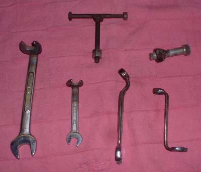
¶ OK, we have a job to do that requires a special tool. If we buy the tools it takes all the profit out of the job. What do we do? Simple... we make it!
Depending on our skill and desire many complex special tools can be made. It may be as simple as heating up a combination wrench with a propane torch and bending it into a special shape to cutting and welding steel into a complex special tool.
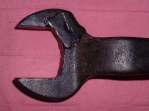
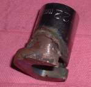
You can take wrenches, cut the end off and weld that end to a socket and bang, another special tool.
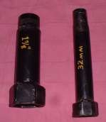 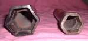
You can make quite a complicated special tool. I had a wheel come in last year for a new set of bearings. Easy job right? Not! It had a special aluminum nut with six slots on it. Why they couldn't have used a nice, easy to remove circlip I don't know. So I cut up some steel strap and welded the pieces together. Then I welded an old nut onto it and boom. A dandy special tool that worked great. Same tool from the manufacturer, $60-80. After market, $20-25. Cost to make? Basically nothing but I did have to clean some rust off the strap steel I used!
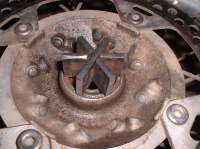 |
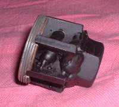 |
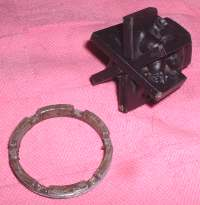 |
So with a bit of welding, you can make a lot of special tools and save a lot of money. If you don't have a welder you can still make a number of special tools just by heating a wrench with a propane torch and bending it. If you have a lath, wow, the skies the limit.
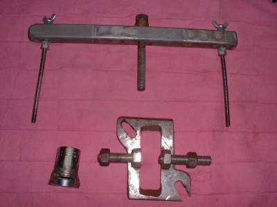

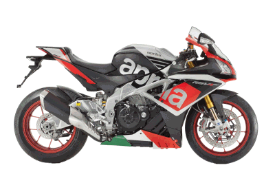 |
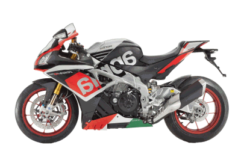 |
Copyright © 1999-2013 dansmc.com. All rights reserved.